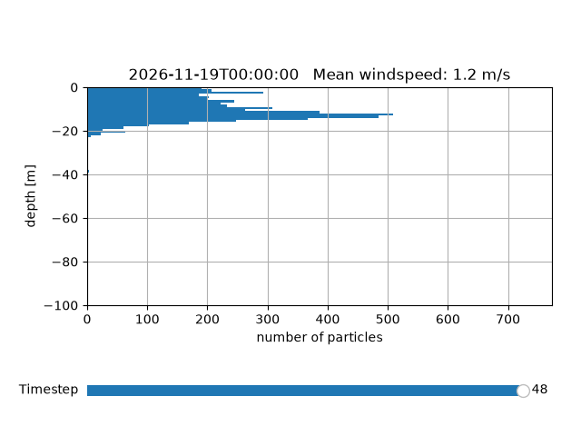
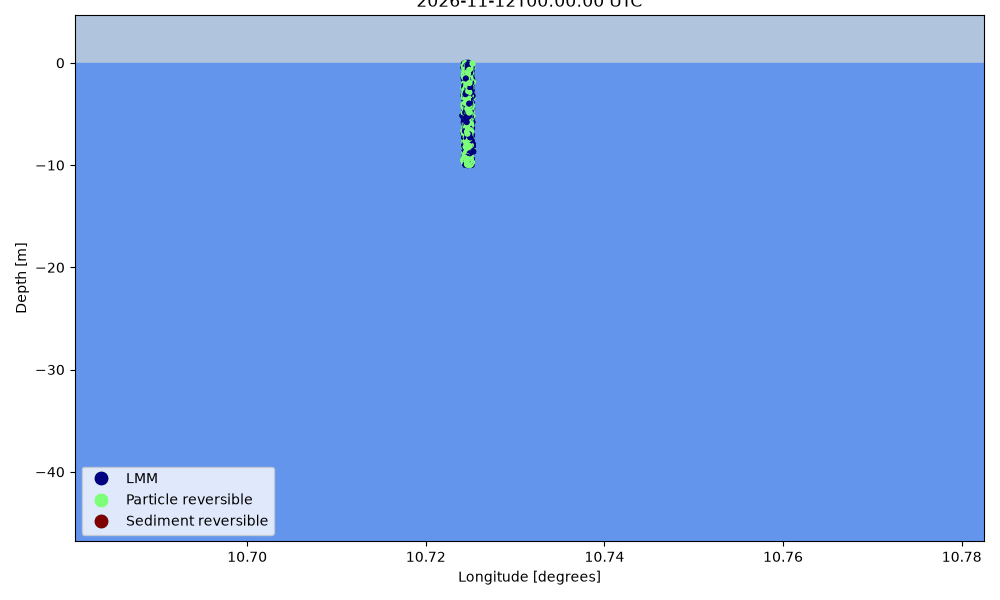

Note
Go to the end to download the full example code.
Radionuclides
from opendrift import test_data_folder as tdf
from opendrift.readers import reader_netCDF_CF_generic
from opendrift.models.radionuclides import RadionuclideDrift
from datetime import timedelta, datetime
import numpy as np
o = RadionuclideDrift(loglevel=20) # Set loglevel to 0 for debug information
# Norkyst
#reader_norkyst = reader_netCDF_CF_generic.Reader(tdf + '/14Jan2016_NorKyst_z_3d/NorKyst-800m_ZDEPTHS_his_00_3Dsubset.nc')
reader_norkyst = reader_netCDF_CF_generic.Reader('https://thredds.met.no/thredds/dodsC/fou-hi/norkystv3_800m_m00_be')
o.add_reader([reader_norkyst])
# Adjusting some configuration
o.set_config('drift:vertical_mixing', True)
#o.set_config('vertical_mixing:diffusivitymodel','constant') # include settling without vertical turbulent mixing
o.set_config('vertical_mixing:diffusivitymodel','environment') # apply vertical diffusivity from ocean model
# Vertical mixing requires fast time step
o.set_config('vertical_mixing:timestep', 600.) # seconds
o.set_config('environment:constant:horizontal_diffusivity', 10)
13:24:06 INFO opendrift:579: OpenDriftSimulation initialised (version 1.14.11 / v1.14.12-93-gcc8f52e)
13:24:06 INFO opendrift.readers:67: Opening file with xr.open_dataset
13:24:16 INFO opendrift.readers.reader_netCDF_CF_generic:340: Detected dimensions: {'x': 'X', 'y': 'Y', 'z': 'depth', 'time': 'time'}
13:24:16 INFO opendrift.readers.basereader:175: Variable x_sea_water_velocity will be rotated from eastward_sea_water_velocity
13:24:16 INFO opendrift.readers.basereader:175: Variable y_sea_water_velocity will be rotated from northward_sea_water_velocity
13:24:16 INFO opendrift.readers.basereader:175: Variable x_wind will be rotated from eastward_wind
13:24:16 INFO opendrift.readers.basereader:175: Variable y_wind will be rotated from northward_wind
o.set_config('radionuclide:particle_diameter',5.e-6) # m
o.set_config('radionuclide:sediment:resuspension_depth',2.)
o.set_config('radionuclide:sediment:resuspension_depth_uncert',0.1)
o.set_config('radionuclide:sediment:resuspension_critvel',0.15)
o.set_config('radionuclide:isotope', '137Cs')
o.set_config('radionuclide:specie_setup','LMM + Rev')
# By default, radionuclides do not strand towards coastline
o.set_config('general:coastline_action', 'previous')
o.set_config('general:seafloor_action','lift_to_seafloor')
o.set_config('seed:LMM_fraction',.45)
o.set_config('seed:particle_fraction',.55)
# SEEDING
td=datetime.today()
time = datetime(td.year, td.month, td.day, 0)
lat = 59.825673
lon = 10.724714
ntraj=5000
iniz=np.random.rand(ntraj) * -10. # seeding the radionuclides in the upper 10m
o.seed_elements(lon, lat, z=iniz, radius=10, number=ntraj, time=time)
13:24:16 INFO opendrift.models.radionuclides:338: All good, isotop: 137Cs, species: LMM + Rev
13:24:16 INFO opendrift.models.radionuclides:273: Number of species: 3
13:24:16 INFO opendrift.models.radionuclides:275: 0 LMM
13:24:16 INFO opendrift.models.radionuclides:275: 1 Particle reversible
13:24:16 INFO opendrift.models.radionuclides:275: 2 Sediment reversible
ISOTOPE 137Cs
13:24:16 INFO opendrift.models.radionuclides:523: ISOTOPE 137Cs
13:24:16 INFO opendrift.models.radionuclides:524: SPECIE SETUP LMM + Rev
13:24:16 INFO opendrift.models.radionuclides:525: Kd: 4.0
13:24:16 INFO opendrift.models.radionuclides:418: Initial speciation:
13:24:16 INFO opendrift.models.radionuclides:420: 2238 0 LMM
13:24:16 INFO opendrift.models.radionuclides:420: 2762 1 Particle reversible
13:24:16 INFO opendrift.models.radionuclides:420: 0 2 Sediment reversible
13:24:16 INFO opendrift.models.radionuclides:440: PARTICLE DIAMETER 5e-06
13:24:16 INFO opendrift.models.radionuclides:452: Min: 4.66e-06, Max: 5.32e-06, Numer of particles seeded: 2762, at normal distribution
13:24:16 INFO opendrift.models.basemodel.environment:204: Adding a global landmask from GSHHG
13:24:22 INFO opendrift.models.basemodel.environment:238: Fallback values will be used for the following variables which have no readers:
13:24:22 INFO opendrift.models.basemodel.environment:241: ocean_mixed_layer_thickness: 50.000000
13:24:22 INFO opendrift.models.basemodel.environment:241: conc3: 0.001000
Running model
o.run(duration=timedelta(hours=48), time_step=1800, time_step_output=3600)
13:24:22 INFO opendrift:1932: Storing previous values of element property lon because of condition (('general:coastline_action', 'in', ['stranding', 'previous']), 'or', ('general:seafloor_action', 'in', ['previous']))
13:24:22 INFO opendrift:1932: Storing previous values of element property lat because of condition (('general:coastline_action', 'in', ['stranding', 'previous']), 'or', ('general:seafloor_action', 'in', ['previous']))
13:24:22 INFO opendrift:968: Using existing reader for land_binary_mask to move elements to ocean
13:24:22 INFO opendrift:1000: All points are in ocean
13:24:22 INFO opendrift.models.radionuclides:213: Number of species: 3
13:24:22 INFO opendrift.models.radionuclides:215: 0 LMM
13:24:22 INFO opendrift.models.radionuclides:215: 1 Particle reversible
13:24:22 INFO opendrift.models.radionuclides:215: 2 Sediment reversible
13:24:22 INFO opendrift.models.radionuclides:218: Isotope: 137Cs
13:24:22 INFO opendrift.models.radionuclides:219: specie setup: LMM + Rev
13:24:22 INFO opendrift.models.radionuclides:221: nspecies: 3
13:24:22 INFO opendrift.models.radionuclides:222: Transfer rates:
[[0.00000e+00 4.64000e-08 4.34304e-03]
[1.16000e-05 0.00000e+00 0.00000e+00]
[1.16000e-06 0.00000e+00 0.00000e+00]]
13:24:22 INFO opendrift.models.radionuclides:226: DEPTH_INTERVALS: [-25.0, -10.0, -5.0, -1.0]
13:24:22 INFO opendrift:2248: 2026-11-17 00:00:00 - step 1 of 96 - 5000 active elements (0 deactivated)
13:24:34 INFO opendrift.models.radionuclides:779: Number of transformations: 68
13:24:34 INFO opendrift.models.radionuclides:972: Number of resuspended particles: 0
13:24:34 INFO opendrift.models.radionuclides:1026: Speciation: [np.int64(2306), np.int64(2694), np.int64(0)] ['LMM', 'Particle reversible', 'Sediment reversible']
13:24:34 INFO opendrift:2248: 2026-11-17 00:30:00 - step 2 of 96 - 5000 active elements (0 deactivated)
13:24:46 INFO opendrift.models.radionuclides:779: Number of transformations: 51
13:24:46 INFO opendrift.models.radionuclides:972: Number of resuspended particles: 0
13:24:46 INFO opendrift.models.radionuclides:1026: Speciation: [np.int64(2357), np.int64(2643), np.int64(0)] ['LMM', 'Particle reversible', 'Sediment reversible']
13:24:46 INFO opendrift:2248: 2026-11-17 01:00:00 - step 3 of 96 - 5000 active elements (0 deactivated)
13:24:46 INFO opendrift.models.radionuclides:779: Number of transformations: 39
13:24:46 INFO opendrift.models.radionuclides:972: Number of resuspended particles: 0
13:24:46 INFO opendrift.models.radionuclides:1026: Speciation: [np.int64(2396), np.int64(2604), np.int64(0)] ['LMM', 'Particle reversible', 'Sediment reversible']
13:24:46 INFO opendrift:2248: 2026-11-17 01:30:00 - step 4 of 96 - 5000 active elements (0 deactivated)
13:24:58 INFO opendrift.models.radionuclides:779: Number of transformations: 64
13:24:58 INFO opendrift.models.radionuclides:972: Number of resuspended particles: 0
13:24:58 INFO opendrift.models.radionuclides:1026: Speciation: [np.int64(2456), np.int64(2544), np.int64(0)] ['LMM', 'Particle reversible', 'Sediment reversible']
13:24:58 INFO opendrift:2248: 2026-11-17 02:00:00 - step 5 of 96 - 5000 active elements (0 deactivated)
13:24:58 INFO opendrift.models.radionuclides:779: Number of transformations: 55
13:24:58 INFO opendrift.models.radionuclides:972: Number of resuspended particles: 0
13:24:58 INFO opendrift.models.radionuclides:1026: Speciation: [np.int64(2511), np.int64(2489), np.int64(0)] ['LMM', 'Particle reversible', 'Sediment reversible']
13:24:58 INFO opendrift:2248: 2026-11-17 02:30:00 - step 6 of 96 - 5000 active elements (0 deactivated)
13:25:14 INFO opendrift.models.radionuclides:779: Number of transformations: 50
13:25:14 INFO opendrift.models.radionuclides:972: Number of resuspended particles: 0
13:25:14 INFO opendrift.models.radionuclides:1026: Speciation: [np.int64(2561), np.int64(2439), np.int64(0)] ['LMM', 'Particle reversible', 'Sediment reversible']
13:25:14 INFO opendrift:2248: 2026-11-17 03:00:00 - step 7 of 96 - 5000 active elements (0 deactivated)
13:25:14 INFO opendrift.models.radionuclides:779: Number of transformations: 53
13:25:14 INFO opendrift.models.radionuclides:972: Number of resuspended particles: 0
13:25:14 INFO opendrift.models.radionuclides:1026: Speciation: [np.int64(2614), np.int64(2386), np.int64(0)] ['LMM', 'Particle reversible', 'Sediment reversible']
13:25:14 INFO opendrift:2248: 2026-11-17 03:30:00 - step 8 of 96 - 5000 active elements (0 deactivated)
13:25:31 INFO opendrift.models.radionuclides:779: Number of transformations: 59
13:25:31 INFO opendrift.models.radionuclides:972: Number of resuspended particles: 0
13:25:31 INFO opendrift.models.radionuclides:1026: Speciation: [np.int64(2671), np.int64(2329), np.int64(0)] ['LMM', 'Particle reversible', 'Sediment reversible']
13:25:31 INFO opendrift:2248: 2026-11-17 04:00:00 - step 9 of 96 - 5000 active elements (0 deactivated)
13:25:31 INFO opendrift.models.radionuclides:779: Number of transformations: 47
13:25:31 INFO opendrift.models.radionuclides:972: Number of resuspended particles: 0
13:25:31 INFO opendrift.models.radionuclides:1026: Speciation: [np.int64(2718), np.int64(2282), np.int64(0)] ['LMM', 'Particle reversible', 'Sediment reversible']
13:25:31 INFO opendrift:2248: 2026-11-17 04:30:00 - step 10 of 96 - 5000 active elements (0 deactivated)
13:25:44 INFO opendrift.models.radionuclides:779: Number of transformations: 54
13:25:44 INFO opendrift.models.radionuclides:972: Number of resuspended particles: 0
13:25:44 INFO opendrift.models.radionuclides:1026: Speciation: [np.int64(2772), np.int64(2228), np.int64(0)] ['LMM', 'Particle reversible', 'Sediment reversible']
13:25:44 INFO opendrift:2248: 2026-11-17 05:00:00 - step 11 of 96 - 5000 active elements (0 deactivated)
13:25:44 INFO opendrift.models.radionuclides:779: Number of transformations: 49
13:25:44 INFO opendrift.models.radionuclides:972: Number of resuspended particles: 0
13:25:44 INFO opendrift.models.radionuclides:1026: Speciation: [np.int64(2821), np.int64(2179), np.int64(0)] ['LMM', 'Particle reversible', 'Sediment reversible']
13:25:44 INFO opendrift:2248: 2026-11-17 05:30:00 - step 12 of 96 - 5000 active elements (0 deactivated)
13:25:59 INFO opendrift.models.radionuclides:779: Number of transformations: 56
13:25:59 INFO opendrift.models.radionuclides:972: Number of resuspended particles: 0
13:25:59 INFO opendrift.models.radionuclides:1026: Speciation: [np.int64(2875), np.int64(2125), np.int64(0)] ['LMM', 'Particle reversible', 'Sediment reversible']
13:25:59 INFO opendrift:2248: 2026-11-17 06:00:00 - step 13 of 96 - 5000 active elements (0 deactivated)
13:25:59 INFO opendrift.models.radionuclides:779: Number of transformations: 46
13:25:59 INFO opendrift.models.radionuclides:972: Number of resuspended particles: 0
13:25:59 INFO opendrift.models.radionuclides:1026: Speciation: [np.int64(2921), np.int64(2079), np.int64(0)] ['LMM', 'Particle reversible', 'Sediment reversible']
13:25:59 INFO opendrift:2248: 2026-11-17 06:30:00 - step 14 of 96 - 5000 active elements (0 deactivated)
13:26:14 INFO opendrift.models.radionuclides:779: Number of transformations: 30
13:26:14 INFO opendrift.models.radionuclides:972: Number of resuspended particles: 0
13:26:14 INFO opendrift.models.radionuclides:1026: Speciation: [np.int64(2951), np.int64(2049), np.int64(0)] ['LMM', 'Particle reversible', 'Sediment reversible']
13:26:14 INFO opendrift:2248: 2026-11-17 07:00:00 - step 15 of 96 - 5000 active elements (0 deactivated)
13:26:14 INFO opendrift.models.radionuclides:779: Number of transformations: 49
13:26:14 INFO opendrift.models.radionuclides:972: Number of resuspended particles: 0
13:26:14 INFO opendrift.models.radionuclides:1026: Speciation: [np.int64(3000), np.int64(2000), np.int64(0)] ['LMM', 'Particle reversible', 'Sediment reversible']
13:26:14 INFO opendrift:2248: 2026-11-17 07:30:00 - step 16 of 96 - 5000 active elements (0 deactivated)
13:26:27 INFO opendrift.models.radionuclides:779: Number of transformations: 40
13:26:27 INFO opendrift.models.radionuclides:972: Number of resuspended particles: 0
13:26:27 INFO opendrift.models.radionuclides:1026: Speciation: [np.int64(3038), np.int64(1961), np.int64(1)] ['LMM', 'Particle reversible', 'Sediment reversible']
13:26:27 INFO opendrift:2248: 2026-11-17 08:00:00 - step 17 of 96 - 5000 active elements (0 deactivated)
13:26:27 INFO opendrift.models.radionuclides:779: Number of transformations: 40
13:26:27 INFO opendrift.models.radionuclides:972: Number of resuspended particles: 0
13:26:27 INFO opendrift.models.radionuclides:1026: Speciation: [np.int64(3078), np.int64(1921), np.int64(1)] ['LMM', 'Particle reversible', 'Sediment reversible']
13:26:27 INFO opendrift:2248: 2026-11-17 08:30:00 - step 18 of 96 - 5000 active elements (0 deactivated)
13:26:40 INFO opendrift.models.radionuclides:779: Number of transformations: 34
13:26:40 INFO opendrift.models.radionuclides:972: Number of resuspended particles: 0
13:26:40 INFO opendrift.models.radionuclides:1026: Speciation: [np.int64(3112), np.int64(1887), np.int64(1)] ['LMM', 'Particle reversible', 'Sediment reversible']
13:26:40 INFO opendrift:2248: 2026-11-17 09:00:00 - step 19 of 96 - 5000 active elements (0 deactivated)
13:26:40 INFO opendrift.models.radionuclides:779: Number of transformations: 44
13:26:40 INFO opendrift.models.radionuclides:972: Number of resuspended particles: 0
13:26:40 INFO opendrift.models.radionuclides:1026: Speciation: [np.int64(3156), np.int64(1843), np.int64(1)] ['LMM', 'Particle reversible', 'Sediment reversible']
13:26:40 INFO opendrift:2248: 2026-11-17 09:30:00 - step 20 of 96 - 5000 active elements (0 deactivated)
13:26:54 INFO opendrift.models.radionuclides:779: Number of transformations: 41
13:26:54 INFO opendrift.models.radionuclides:972: Number of resuspended particles: 0
13:26:54 INFO opendrift.models.radionuclides:1026: Speciation: [np.int64(3197), np.int64(1802), np.int64(1)] ['LMM', 'Particle reversible', 'Sediment reversible']
13:26:54 INFO opendrift:2248: 2026-11-17 10:00:00 - step 21 of 96 - 5000 active elements (0 deactivated)
13:26:54 INFO opendrift.models.radionuclides:779: Number of transformations: 43
13:26:54 INFO opendrift.models.radionuclides:972: Number of resuspended particles: 0
13:26:54 INFO opendrift.models.radionuclides:1026: Speciation: [np.int64(3238), np.int64(1760), np.int64(2)] ['LMM', 'Particle reversible', 'Sediment reversible']
13:26:54 INFO opendrift:2248: 2026-11-17 10:30:00 - step 22 of 96 - 5000 active elements (0 deactivated)
13:27:07 INFO opendrift.models.radionuclides:779: Number of transformations: 47
13:27:07 INFO opendrift.models.radionuclides:972: Number of resuspended particles: 0
13:27:07 INFO opendrift.models.radionuclides:1026: Speciation: [np.int64(3285), np.int64(1713), np.int64(2)] ['LMM', 'Particle reversible', 'Sediment reversible']
13:27:07 INFO opendrift:2248: 2026-11-17 11:00:00 - step 23 of 96 - 5000 active elements (0 deactivated)
13:27:07 INFO opendrift.models.radionuclides:779: Number of transformations: 35
13:27:07 INFO opendrift.models.radionuclides:972: Number of resuspended particles: 0
13:27:07 INFO opendrift.models.radionuclides:1026: Speciation: [np.int64(3318), np.int64(1679), np.int64(3)] ['LMM', 'Particle reversible', 'Sediment reversible']
13:27:07 INFO opendrift:2248: 2026-11-17 11:30:00 - step 24 of 96 - 5000 active elements (0 deactivated)
13:27:19 INFO opendrift.models.radionuclides:779: Number of transformations: 26
13:27:19 INFO opendrift.models.radionuclides:972: Number of resuspended particles: 0
13:27:19 INFO opendrift.models.radionuclides:1026: Speciation: [np.int64(3340), np.int64(1656), np.int64(4)] ['LMM', 'Particle reversible', 'Sediment reversible']
13:27:19 INFO opendrift:2248: 2026-11-17 12:00:00 - step 25 of 96 - 5000 active elements (0 deactivated)
13:27:19 INFO opendrift.models.radionuclides:779: Number of transformations: 41
13:27:19 INFO opendrift.models.radionuclides:972: Number of resuspended particles: 0
13:27:19 INFO opendrift.models.radionuclides:1026: Speciation: [np.int64(3379), np.int64(1616), np.int64(5)] ['LMM', 'Particle reversible', 'Sediment reversible']
13:27:19 INFO opendrift:2248: 2026-11-17 12:30:00 - step 26 of 96 - 5000 active elements (0 deactivated)
13:27:33 INFO opendrift.models.radionuclides:779: Number of transformations: 31
13:27:33 INFO opendrift.models.radionuclides:972: Number of resuspended particles: 0
13:27:33 INFO opendrift.models.radionuclides:1026: Speciation: [np.int64(3406), np.int64(1588), np.int64(6)] ['LMM', 'Particle reversible', 'Sediment reversible']
13:27:33 INFO opendrift:2248: 2026-11-17 13:00:00 - step 27 of 96 - 5000 active elements (0 deactivated)
13:27:33 INFO opendrift.models.radionuclides:779: Number of transformations: 42
13:27:33 INFO opendrift.models.radionuclides:972: Number of resuspended particles: 0
13:27:33 INFO opendrift.models.radionuclides:1026: Speciation: [np.int64(3442), np.int64(1551), np.int64(7)] ['LMM', 'Particle reversible', 'Sediment reversible']
13:27:33 INFO opendrift:2248: 2026-11-17 13:30:00 - step 28 of 96 - 5000 active elements (0 deactivated)
13:27:45 INFO opendrift.models.radionuclides:779: Number of transformations: 31
13:27:45 INFO opendrift.models.radionuclides:972: Number of resuspended particles: 0
13:27:45 INFO opendrift.models.radionuclides:1026: Speciation: [np.int64(3467), np.int64(1524), np.int64(9)] ['LMM', 'Particle reversible', 'Sediment reversible']
13:27:45 INFO opendrift:2248: 2026-11-17 14:00:00 - step 29 of 96 - 5000 active elements (0 deactivated)
13:27:46 INFO opendrift.models.radionuclides:779: Number of transformations: 44
13:27:46 INFO opendrift.models.radionuclides:972: Number of resuspended particles: 0
13:27:46 INFO opendrift.models.radionuclides:1026: Speciation: [np.int64(3509), np.int64(1481), np.int64(10)] ['LMM', 'Particle reversible', 'Sediment reversible']
13:27:46 INFO opendrift:2248: 2026-11-17 14:30:00 - step 30 of 96 - 5000 active elements (0 deactivated)
13:28:01 INFO opendrift.models.radionuclides:779: Number of transformations: 25
13:28:01 INFO opendrift.models.radionuclides:972: Number of resuspended particles: 0
13:28:01 INFO opendrift.models.radionuclides:1026: Speciation: [np.int64(3534), np.int64(1456), np.int64(10)] ['LMM', 'Particle reversible', 'Sediment reversible']
13:28:01 INFO opendrift:2248: 2026-11-17 15:00:00 - step 31 of 96 - 5000 active elements (0 deactivated)
13:28:01 INFO opendrift.models.radionuclides:779: Number of transformations: 28
13:28:01 INFO opendrift.models.radionuclides:972: Number of resuspended particles: 0
13:28:01 INFO opendrift.models.radionuclides:1026: Speciation: [np.int64(3560), np.int64(1429), np.int64(11)] ['LMM', 'Particle reversible', 'Sediment reversible']
13:28:01 INFO opendrift:2248: 2026-11-17 15:30:00 - step 32 of 96 - 5000 active elements (0 deactivated)
13:28:16 INFO opendrift.models.radionuclides:779: Number of transformations: 25
13:28:17 INFO opendrift.models.radionuclides:972: Number of resuspended particles: 0
13:28:17 INFO opendrift.models.radionuclides:1026: Speciation: [np.int64(3583), np.int64(1406), np.int64(11)] ['LMM', 'Particle reversible', 'Sediment reversible']
13:28:17 INFO opendrift:2248: 2026-11-17 16:00:00 - step 33 of 96 - 5000 active elements (0 deactivated)
13:28:17 INFO opendrift.models.radionuclides:779: Number of transformations: 33
13:28:17 INFO opendrift.models.radionuclides:972: Number of resuspended particles: 0
13:28:17 INFO opendrift.models.radionuclides:1026: Speciation: [np.int64(3612), np.int64(1375), np.int64(13)] ['LMM', 'Particle reversible', 'Sediment reversible']
13:28:17 INFO opendrift:2248: 2026-11-17 16:30:00 - step 34 of 96 - 5000 active elements (0 deactivated)
13:28:32 INFO opendrift.models.radionuclides:779: Number of transformations: 26
13:28:32 INFO opendrift.models.radionuclides:972: Number of resuspended particles: 0
13:28:32 INFO opendrift.models.radionuclides:1026: Speciation: [np.int64(3634), np.int64(1352), np.int64(14)] ['LMM', 'Particle reversible', 'Sediment reversible']
13:28:32 INFO opendrift:2248: 2026-11-17 17:00:00 - step 35 of 96 - 5000 active elements (0 deactivated)
13:28:32 INFO opendrift.models.radionuclides:779: Number of transformations: 35
13:28:32 INFO opendrift.models.radionuclides:972: Number of resuspended particles: 0
13:28:32 INFO opendrift.models.radionuclides:1026: Speciation: [np.int64(3669), np.int64(1318), np.int64(13)] ['LMM', 'Particle reversible', 'Sediment reversible']
13:28:32 INFO opendrift:2248: 2026-11-17 17:30:00 - step 36 of 96 - 5000 active elements (0 deactivated)
13:28:47 INFO opendrift.models.radionuclides:779: Number of transformations: 30
13:28:47 INFO opendrift.models.radionuclides:972: Number of resuspended particles: 0
13:28:47 INFO opendrift.models.radionuclides:1026: Speciation: [np.int64(3697), np.int64(1289), np.int64(14)] ['LMM', 'Particle reversible', 'Sediment reversible']
13:28:47 INFO opendrift:2248: 2026-11-17 18:00:00 - step 37 of 96 - 5000 active elements (0 deactivated)
13:28:47 INFO opendrift.models.radionuclides:779: Number of transformations: 23
13:28:47 INFO opendrift.models.radionuclides:972: Number of resuspended particles: 0
13:28:47 INFO opendrift.models.radionuclides:1026: Speciation: [np.int64(3718), np.int64(1267), np.int64(15)] ['LMM', 'Particle reversible', 'Sediment reversible']
13:28:47 INFO opendrift:2248: 2026-11-17 18:30:00 - step 38 of 96 - 5000 active elements (0 deactivated)
13:29:01 INFO opendrift.models.radionuclides:779: Number of transformations: 23
13:29:01 INFO opendrift.models.radionuclides:972: Number of resuspended particles: 0
13:29:01 INFO opendrift.models.radionuclides:1026: Speciation: [np.int64(3741), np.int64(1244), np.int64(15)] ['LMM', 'Particle reversible', 'Sediment reversible']
13:29:01 INFO opendrift:2248: 2026-11-17 19:00:00 - step 39 of 96 - 5000 active elements (0 deactivated)
13:29:02 INFO opendrift.models.radionuclides:779: Number of transformations: 35
13:29:02 INFO opendrift.models.radionuclides:972: Number of resuspended particles: 0
13:29:02 INFO opendrift.models.radionuclides:1026: Speciation: [np.int64(3772), np.int64(1212), np.int64(16)] ['LMM', 'Particle reversible', 'Sediment reversible']
13:29:02 INFO opendrift:2248: 2026-11-17 19:30:00 - step 40 of 96 - 5000 active elements (0 deactivated)
13:29:19 INFO opendrift.models.radionuclides:779: Number of transformations: 24
13:29:19 INFO opendrift.models.radionuclides:972: Number of resuspended particles: 0
13:29:19 INFO opendrift.models.radionuclides:1026: Speciation: [np.int64(3792), np.int64(1190), np.int64(18)] ['LMM', 'Particle reversible', 'Sediment reversible']
13:29:19 INFO opendrift:2248: 2026-11-17 20:00:00 - step 41 of 96 - 5000 active elements (0 deactivated)
13:29:19 INFO opendrift.models.radionuclides:779: Number of transformations: 26
13:29:19 INFO opendrift.models.radionuclides:972: Number of resuspended particles: 0
13:29:19 INFO opendrift.models.radionuclides:1026: Speciation: [np.int64(3818), np.int64(1164), np.int64(18)] ['LMM', 'Particle reversible', 'Sediment reversible']
13:29:19 INFO opendrift:2248: 2026-11-17 20:30:00 - step 42 of 96 - 5000 active elements (0 deactivated)
13:29:36 INFO opendrift.models.radionuclides:779: Number of transformations: 22
13:29:36 INFO opendrift.models.radionuclides:972: Number of resuspended particles: 0
13:29:36 INFO opendrift.models.radionuclides:1026: Speciation: [np.int64(3834), np.int64(1146), np.int64(20)] ['LMM', 'Particle reversible', 'Sediment reversible']
13:29:36 INFO opendrift:2248: 2026-11-17 21:00:00 - step 43 of 96 - 5000 active elements (0 deactivated)
13:29:37 INFO opendrift.models.radionuclides:779: Number of transformations: 23
13:29:37 INFO opendrift.models.radionuclides:972: Number of resuspended particles: 0
13:29:37 INFO opendrift.models.radionuclides:1026: Speciation: [np.int64(3853), np.int64(1126), np.int64(21)] ['LMM', 'Particle reversible', 'Sediment reversible']
13:29:37 INFO opendrift:2248: 2026-11-17 21:30:00 - step 44 of 96 - 5000 active elements (0 deactivated)
13:29:51 INFO opendrift.models.radionuclides:779: Number of transformations: 22
13:29:51 INFO opendrift.models.radionuclides:972: Number of resuspended particles: 0
13:29:51 INFO opendrift.models.radionuclides:1026: Speciation: [np.int64(3869), np.int64(1107), np.int64(24)] ['LMM', 'Particle reversible', 'Sediment reversible']
13:29:51 INFO opendrift:2248: 2026-11-17 22:00:00 - step 45 of 96 - 5000 active elements (0 deactivated)
13:29:52 INFO opendrift.models.radionuclides:779: Number of transformations: 28
13:29:52 INFO opendrift.models.radionuclides:972: Number of resuspended particles: 0
13:29:52 INFO opendrift.models.radionuclides:1026: Speciation: [np.int64(3893), np.int64(1081), np.int64(26)] ['LMM', 'Particle reversible', 'Sediment reversible']
13:29:52 INFO opendrift:2248: 2026-11-17 22:30:00 - step 46 of 96 - 5000 active elements (0 deactivated)
13:30:08 INFO opendrift.models.radionuclides:779: Number of transformations: 26
13:30:08 INFO opendrift.models.radionuclides:972: Number of resuspended particles: 0
13:30:08 INFO opendrift.models.radionuclides:1026: Speciation: [np.int64(3911), np.int64(1061), np.int64(28)] ['LMM', 'Particle reversible', 'Sediment reversible']
13:30:08 INFO opendrift:2248: 2026-11-17 23:00:00 - step 47 of 96 - 5000 active elements (0 deactivated)
13:30:09 INFO opendrift.models.radionuclides:779: Number of transformations: 21
13:30:09 INFO opendrift.models.radionuclides:972: Number of resuspended particles: 0
13:30:09 INFO opendrift.models.radionuclides:1026: Speciation: [np.int64(3926), np.int64(1043), np.int64(31)] ['LMM', 'Particle reversible', 'Sediment reversible']
13:30:09 INFO opendrift:2248: 2026-11-17 23:30:00 - step 48 of 96 - 5000 active elements (0 deactivated)
13:30:26 INFO opendrift.models.radionuclides:779: Number of transformations: 25
13:30:26 INFO opendrift.models.radionuclides:972: Number of resuspended particles: 0
13:30:26 INFO opendrift.models.radionuclides:1026: Speciation: [np.int64(3947), np.int64(1021), np.int64(32)] ['LMM', 'Particle reversible', 'Sediment reversible']
13:30:26 INFO opendrift:2248: 2026-11-18 00:00:00 - step 49 of 96 - 5000 active elements (0 deactivated)
13:30:26 INFO opendrift.models.radionuclides:779: Number of transformations: 34
13:30:26 INFO opendrift.models.radionuclides:972: Number of resuspended particles: 0
13:30:26 INFO opendrift.models.radionuclides:1026: Speciation: [np.int64(3975), np.int64(990), np.int64(35)] ['LMM', 'Particle reversible', 'Sediment reversible']
13:30:26 INFO opendrift:2248: 2026-11-18 00:30:00 - step 50 of 96 - 5000 active elements (0 deactivated)
13:30:40 INFO opendrift.models.radionuclides:779: Number of transformations: 14
13:30:40 INFO opendrift.models.radionuclides:972: Number of resuspended particles: 0
13:30:40 INFO opendrift.models.radionuclides:1026: Speciation: [np.int64(3983), np.int64(979), np.int64(38)] ['LMM', 'Particle reversible', 'Sediment reversible']
13:30:40 INFO opendrift:2248: 2026-11-18 01:00:00 - step 51 of 96 - 5000 active elements (0 deactivated)
13:30:40 INFO opendrift.models.radionuclides:779: Number of transformations: 27
13:30:40 INFO opendrift.models.radionuclides:972: Number of resuspended particles: 0
13:30:40 INFO opendrift.models.radionuclides:1026: Speciation: [np.int64(3992), np.int64(961), np.int64(47)] ['LMM', 'Particle reversible', 'Sediment reversible']
13:30:40 INFO opendrift:2248: 2026-11-18 01:30:00 - step 52 of 96 - 5000 active elements (0 deactivated)
13:30:54 INFO opendrift.models.radionuclides:779: Number of transformations: 23
13:30:54 INFO opendrift.models.radionuclides:972: Number of resuspended particles: 0
13:30:54 INFO opendrift.models.radionuclides:1026: Speciation: [np.int64(4007), np.int64(942), np.int64(51)] ['LMM', 'Particle reversible', 'Sediment reversible']
13:30:54 INFO opendrift:2248: 2026-11-18 02:00:00 - step 53 of 96 - 5000 active elements (0 deactivated)
13:30:54 INFO opendrift.models.radionuclides:779: Number of transformations: 19
13:30:54 INFO opendrift.models.radionuclides:972: Number of resuspended particles: 0
13:30:54 INFO opendrift.models.radionuclides:1026: Speciation: [np.int64(4020), np.int64(927), np.int64(53)] ['LMM', 'Particle reversible', 'Sediment reversible']
13:30:54 INFO opendrift:2248: 2026-11-18 02:30:00 - step 54 of 96 - 5000 active elements (0 deactivated)
13:31:07 INFO opendrift.models.radionuclides:779: Number of transformations: 25
13:31:07 INFO opendrift.models.radionuclides:972: Number of resuspended particles: 0
13:31:07 INFO opendrift.models.radionuclides:1026: Speciation: [np.int64(4037), np.int64(906), np.int64(57)] ['LMM', 'Particle reversible', 'Sediment reversible']
13:31:07 INFO opendrift:2248: 2026-11-18 03:00:00 - step 55 of 96 - 5000 active elements (0 deactivated)
13:31:07 INFO opendrift.models.radionuclides:779: Number of transformations: 26
13:31:07 INFO opendrift.models.radionuclides:972: Number of resuspended particles: 0
13:31:07 INFO opendrift.models.radionuclides:1026: Speciation: [np.int64(4059), np.int64(882), np.int64(59)] ['LMM', 'Particle reversible', 'Sediment reversible']
13:31:07 INFO opendrift:2248: 2026-11-18 03:30:00 - step 56 of 96 - 5000 active elements (0 deactivated)
13:31:20 INFO opendrift.models.radionuclides:779: Number of transformations: 27
13:31:20 INFO opendrift.models.radionuclides:972: Number of resuspended particles: 0
13:31:20 INFO opendrift.models.radionuclides:1026: Speciation: [np.int64(4074), np.int64(863), np.int64(63)] ['LMM', 'Particle reversible', 'Sediment reversible']
13:31:20 INFO opendrift:2248: 2026-11-18 04:00:00 - step 57 of 96 - 5000 active elements (0 deactivated)
13:31:21 INFO opendrift.models.radionuclides:779: Number of transformations: 22
13:31:21 INFO opendrift.models.radionuclides:972: Number of resuspended particles: 0
13:31:21 INFO opendrift.models.radionuclides:1026: Speciation: [np.int64(4086), np.int64(846), np.int64(68)] ['LMM', 'Particle reversible', 'Sediment reversible']
13:31:21 INFO opendrift:2248: 2026-11-18 04:30:00 - step 58 of 96 - 5000 active elements (0 deactivated)
13:31:36 INFO opendrift.models.radionuclides:779: Number of transformations: 15
13:31:36 INFO opendrift.models.radionuclides:972: Number of resuspended particles: 0
13:31:36 INFO opendrift.models.radionuclides:1026: Speciation: [np.int64(4091), np.int64(836), np.int64(73)] ['LMM', 'Particle reversible', 'Sediment reversible']
13:31:36 INFO opendrift:2248: 2026-11-18 05:00:00 - step 59 of 96 - 5000 active elements (0 deactivated)
13:31:36 INFO opendrift.models.radionuclides:779: Number of transformations: 17
13:31:36 INFO opendrift.models.radionuclides:972: Number of resuspended particles: 0
13:31:36 INFO opendrift.models.radionuclides:1026: Speciation: [np.int64(4100), np.int64(823), np.int64(77)] ['LMM', 'Particle reversible', 'Sediment reversible']
13:31:36 INFO opendrift:2248: 2026-11-18 05:30:00 - step 60 of 96 - 5000 active elements (0 deactivated)
13:31:48 INFO opendrift.models.radionuclides:779: Number of transformations: 27
13:31:49 INFO opendrift.models.radionuclides:972: Number of resuspended particles: 0
13:31:49 INFO opendrift.models.radionuclides:1026: Speciation: [np.int64(4117), np.int64(801), np.int64(82)] ['LMM', 'Particle reversible', 'Sediment reversible']
13:31:49 INFO opendrift:2248: 2026-11-18 06:00:00 - step 61 of 96 - 5000 active elements (0 deactivated)
13:31:49 INFO opendrift.models.radionuclides:779: Number of transformations: 19
13:31:49 INFO opendrift.models.radionuclides:972: Number of resuspended particles: 0
13:31:49 INFO opendrift.models.radionuclides:1026: Speciation: [np.int64(4124), np.int64(788), np.int64(88)] ['LMM', 'Particle reversible', 'Sediment reversible']
13:31:49 INFO opendrift:2248: 2026-11-18 06:30:00 - step 62 of 96 - 5000 active elements (0 deactivated)
13:32:00 INFO opendrift.models.radionuclides:779: Number of transformations: 20
13:32:00 INFO opendrift.models.radionuclides:972: Number of resuspended particles: 0
13:32:00 INFO opendrift.models.radionuclides:1026: Speciation: [np.int64(4132), np.int64(774), np.int64(94)] ['LMM', 'Particle reversible', 'Sediment reversible']
13:32:00 INFO opendrift:2248: 2026-11-18 07:00:00 - step 63 of 96 - 5000 active elements (0 deactivated)
13:32:01 INFO opendrift.models.radionuclides:779: Number of transformations: 12
13:32:01 INFO opendrift.models.radionuclides:972: Number of resuspended particles: 0
13:32:01 INFO opendrift.models.radionuclides:1026: Speciation: [np.int64(4142), np.int64(765), np.int64(93)] ['LMM', 'Particle reversible', 'Sediment reversible']
13:32:01 INFO opendrift:2248: 2026-11-18 07:30:00 - step 64 of 96 - 5000 active elements (0 deactivated)
13:32:13 INFO opendrift.models.radionuclides:779: Number of transformations: 24
13:32:13 INFO opendrift.models.radionuclides:972: Number of resuspended particles: 0
13:32:13 INFO opendrift.models.radionuclides:1026: Speciation: [np.int64(4156), np.int64(746), np.int64(98)] ['LMM', 'Particle reversible', 'Sediment reversible']
13:32:13 INFO opendrift:2248: 2026-11-18 08:00:00 - step 65 of 96 - 5000 active elements (0 deactivated)
13:32:13 INFO opendrift.models.radionuclides:779: Number of transformations: 18
13:32:13 INFO opendrift.models.radionuclides:972: Number of resuspended particles: 0
13:32:13 INFO opendrift.models.radionuclides:1026: Speciation: [np.int64(4164), np.int64(733), np.int64(103)] ['LMM', 'Particle reversible', 'Sediment reversible']
13:32:13 INFO opendrift:2248: 2026-11-18 08:30:00 - step 66 of 96 - 5000 active elements (0 deactivated)
13:32:25 INFO opendrift.models.radionuclides:779: Number of transformations: 14
13:32:25 INFO opendrift.models.radionuclides:972: Number of resuspended particles: 0
13:32:25 INFO opendrift.models.radionuclides:1026: Speciation: [np.int64(4172), np.int64(722), np.int64(106)] ['LMM', 'Particle reversible', 'Sediment reversible']
13:32:25 INFO opendrift:2248: 2026-11-18 09:00:00 - step 67 of 96 - 5000 active elements (0 deactivated)
13:32:25 INFO opendrift.models.radionuclides:779: Number of transformations: 29
13:32:25 INFO opendrift.models.radionuclides:972: Number of resuspended particles: 0
13:32:25 INFO opendrift.models.radionuclides:1026: Speciation: [np.int64(4195), np.int64(699), np.int64(106)] ['LMM', 'Particle reversible', 'Sediment reversible']
13:32:25 INFO opendrift:2248: 2026-11-18 09:30:00 - step 68 of 96 - 5000 active elements (0 deactivated)
13:32:40 INFO opendrift.models.radionuclides:779: Number of transformations: 23
13:32:40 INFO opendrift.models.radionuclides:972: Number of resuspended particles: 0
13:32:40 INFO opendrift.models.radionuclides:1026: Speciation: [np.int64(4202), np.int64(684), np.int64(114)] ['LMM', 'Particle reversible', 'Sediment reversible']
13:32:40 INFO opendrift:2248: 2026-11-18 10:00:00 - step 69 of 96 - 5000 active elements (0 deactivated)
13:32:40 INFO opendrift.models.radionuclides:779: Number of transformations: 18
13:32:40 INFO opendrift.models.radionuclides:972: Number of resuspended particles: 0
13:32:40 INFO opendrift.models.radionuclides:1026: Speciation: [np.int64(4212), np.int64(670), np.int64(118)] ['LMM', 'Particle reversible', 'Sediment reversible']
13:32:40 INFO opendrift:2248: 2026-11-18 10:30:00 - step 70 of 96 - 5000 active elements (0 deactivated)
13:32:52 INFO opendrift.models.radionuclides:779: Number of transformations: 20
13:32:52 INFO opendrift.models.radionuclides:972: Number of resuspended particles: 0
13:32:52 INFO opendrift.models.radionuclides:1026: Speciation: [np.int64(4220), np.int64(657), np.int64(123)] ['LMM', 'Particle reversible', 'Sediment reversible']
13:32:52 INFO opendrift:2248: 2026-11-18 11:00:00 - step 71 of 96 - 5000 active elements (0 deactivated)
13:32:53 INFO opendrift.models.radionuclides:779: Number of transformations: 18
13:32:53 INFO opendrift.models.radionuclides:972: Number of resuspended particles: 0
13:32:53 INFO opendrift.models.radionuclides:1026: Speciation: [np.int64(4228), np.int64(646), np.int64(126)] ['LMM', 'Particle reversible', 'Sediment reversible']
13:32:53 INFO opendrift:2248: 2026-11-18 11:30:00 - step 72 of 96 - 5000 active elements (0 deactivated)
13:33:45 INFO opendrift.models.radionuclides:779: Number of transformations: 10
13:33:45 INFO opendrift.models.radionuclides:972: Number of resuspended particles: 0
13:33:45 INFO opendrift.models.radionuclides:1026: Speciation: [np.int64(4236), np.int64(637), np.int64(127)] ['LMM', 'Particle reversible', 'Sediment reversible']
13:33:45 INFO opendrift:2248: 2026-11-18 12:00:00 - step 73 of 96 - 5000 active elements (0 deactivated)
13:33:45 INFO opendrift.models.radionuclides:779: Number of transformations: 23
13:33:45 INFO opendrift.models.radionuclides:972: Number of resuspended particles: 0
13:33:45 INFO opendrift.models.radionuclides:1026: Speciation: [np.int64(4247), np.int64(621), np.int64(132)] ['LMM', 'Particle reversible', 'Sediment reversible']
13:33:45 INFO opendrift:2248: 2026-11-18 12:30:00 - step 74 of 96 - 5000 active elements (0 deactivated)
13:34:00 INFO opendrift.models.radionuclides:779: Number of transformations: 17
13:34:00 INFO opendrift.models.radionuclides:972: Number of resuspended particles: 0
13:34:00 INFO opendrift.models.radionuclides:1026: Speciation: [np.int64(4250), np.int64(612), np.int64(138)] ['LMM', 'Particle reversible', 'Sediment reversible']
13:34:00 INFO opendrift:2248: 2026-11-18 13:00:00 - step 75 of 96 - 5000 active elements (0 deactivated)
13:34:01 INFO opendrift.models.radionuclides:779: Number of transformations: 9
13:34:01 INFO opendrift.models.radionuclides:972: Number of resuspended particles: 0
13:34:01 INFO opendrift.models.radionuclides:1026: Speciation: [np.int64(4257), np.int64(605), np.int64(138)] ['LMM', 'Particle reversible', 'Sediment reversible']
13:34:01 INFO opendrift:2248: 2026-11-18 13:30:00 - step 76 of 96 - 5000 active elements (0 deactivated)
13:34:15 INFO opendrift.models.radionuclides:779: Number of transformations: 13
13:34:15 INFO opendrift.models.radionuclides:972: Number of resuspended particles: 0
13:34:15 INFO opendrift.models.radionuclides:1026: Speciation: [np.int64(4258), np.int64(599), np.int64(143)] ['LMM', 'Particle reversible', 'Sediment reversible']
13:34:15 INFO opendrift:2248: 2026-11-18 14:00:00 - step 77 of 96 - 5000 active elements (0 deactivated)
13:34:15 INFO opendrift.models.radionuclides:779: Number of transformations: 17
13:34:15 INFO opendrift.models.radionuclides:972: Number of resuspended particles: 0
13:34:15 INFO opendrift.models.radionuclides:1026: Speciation: [np.int64(4263), np.int64(589), np.int64(148)] ['LMM', 'Particle reversible', 'Sediment reversible']
13:34:15 INFO opendrift:2248: 2026-11-18 14:30:00 - step 78 of 96 - 5000 active elements (0 deactivated)
13:34:29 INFO opendrift.models.radionuclides:779: Number of transformations: 23
13:34:29 INFO opendrift.models.radionuclides:972: Number of resuspended particles: 0
13:34:29 INFO opendrift.models.radionuclides:1026: Speciation: [np.int64(4264), np.int64(578), np.int64(158)] ['LMM', 'Particle reversible', 'Sediment reversible']
13:34:29 INFO opendrift:2248: 2026-11-18 15:00:00 - step 79 of 96 - 5000 active elements (0 deactivated)
13:34:29 INFO opendrift.models.radionuclides:779: Number of transformations: 18
13:34:29 INFO opendrift.models.radionuclides:972: Number of resuspended particles: 0
13:34:29 INFO opendrift.models.radionuclides:1026: Speciation: [np.int64(4268), np.int64(567), np.int64(165)] ['LMM', 'Particle reversible', 'Sediment reversible']
13:34:29 INFO opendrift:2248: 2026-11-18 15:30:00 - step 80 of 96 - 5000 active elements (0 deactivated)
13:34:46 INFO opendrift.models.radionuclides:779: Number of transformations: 22
13:34:46 INFO opendrift.models.radionuclides:972: Number of resuspended particles: 0
13:34:46 INFO opendrift.models.radionuclides:1026: Speciation: [np.int64(4280), np.int64(550), np.int64(170)] ['LMM', 'Particle reversible', 'Sediment reversible']
13:34:46 INFO opendrift:2248: 2026-11-18 16:00:00 - step 81 of 96 - 5000 active elements (0 deactivated)
13:34:46 INFO opendrift.models.radionuclides:779: Number of transformations: 21
13:34:46 INFO opendrift.models.radionuclides:972: Number of resuspended particles: 0
13:34:46 INFO opendrift.models.radionuclides:1026: Speciation: [np.int64(4289), np.int64(536), np.int64(175)] ['LMM', 'Particle reversible', 'Sediment reversible']
13:34:46 INFO opendrift:2248: 2026-11-18 16:30:00 - step 82 of 96 - 5000 active elements (0 deactivated)
13:35:00 INFO opendrift.models.radionuclides:779: Number of transformations: 15
13:35:00 INFO opendrift.models.radionuclides:972: Number of resuspended particles: 0
13:35:00 INFO opendrift.models.radionuclides:1026: Speciation: [np.int64(4292), np.int64(528), np.int64(180)] ['LMM', 'Particle reversible', 'Sediment reversible']
13:35:00 INFO opendrift:2248: 2026-11-18 17:00:00 - step 83 of 96 - 5000 active elements (0 deactivated)
13:35:01 INFO opendrift.models.radionuclides:779: Number of transformations: 8
13:35:01 INFO opendrift.models.radionuclides:972: Number of resuspended particles: 0
13:35:01 INFO opendrift.models.radionuclides:1026: Speciation: [np.int64(4298), np.int64(521), np.int64(181)] ['LMM', 'Particle reversible', 'Sediment reversible']
13:35:01 INFO opendrift:2248: 2026-11-18 17:30:00 - step 84 of 96 - 5000 active elements (0 deactivated)
13:35:18 INFO opendrift.models.radionuclides:779: Number of transformations: 13
13:35:18 INFO opendrift.models.radionuclides:972: Number of resuspended particles: 0
13:35:18 INFO opendrift.models.radionuclides:1026: Speciation: [np.int64(4307), np.int64(510), np.int64(183)] ['LMM', 'Particle reversible', 'Sediment reversible']
13:35:18 INFO opendrift:2248: 2026-11-18 18:00:00 - step 85 of 96 - 5000 active elements (0 deactivated)
13:35:18 INFO opendrift.models.radionuclides:779: Number of transformations: 18
13:35:18 INFO opendrift.models.radionuclides:972: Number of resuspended particles: 0
13:35:18 INFO opendrift.models.radionuclides:1026: Speciation: [np.int64(4313), np.int64(500), np.int64(187)] ['LMM', 'Particle reversible', 'Sediment reversible']
13:35:18 INFO opendrift:2248: 2026-11-18 18:30:00 - step 86 of 96 - 5000 active elements (0 deactivated)
13:35:34 INFO opendrift.models.radionuclides:779: Number of transformations: 11
13:35:34 INFO opendrift.models.radionuclides:972: Number of resuspended particles: 0
13:35:34 INFO opendrift.models.radionuclides:1026: Speciation: [np.int64(4320), np.int64(491), np.int64(189)] ['LMM', 'Particle reversible', 'Sediment reversible']
13:35:34 INFO opendrift:2248: 2026-11-18 19:00:00 - step 87 of 96 - 5000 active elements (0 deactivated)
13:35:34 INFO opendrift.models.radionuclides:779: Number of transformations: 10
13:35:34 INFO opendrift.models.radionuclides:972: Number of resuspended particles: 0
13:35:34 INFO opendrift.models.radionuclides:1026: Speciation: [np.int64(4322), np.int64(485), np.int64(193)] ['LMM', 'Particle reversible', 'Sediment reversible']
13:35:34 INFO opendrift:2248: 2026-11-18 19:30:00 - step 88 of 96 - 5000 active elements (0 deactivated)
13:35:55 INFO opendrift.models.radionuclides:779: Number of transformations: 16
13:35:55 INFO opendrift.models.radionuclides:972: Number of resuspended particles: 0
13:35:55 INFO opendrift.models.radionuclides:1026: Speciation: [np.int64(4326), np.int64(478), np.int64(196)] ['LMM', 'Particle reversible', 'Sediment reversible']
13:35:55 INFO opendrift:2248: 2026-11-18 20:00:00 - step 89 of 96 - 5000 active elements (0 deactivated)
13:35:56 INFO opendrift.models.radionuclides:779: Number of transformations: 9
13:35:56 INFO opendrift.models.radionuclides:972: Number of resuspended particles: 0
13:35:56 INFO opendrift.models.radionuclides:1026: Speciation: [np.int64(4331), np.int64(473), np.int64(196)] ['LMM', 'Particle reversible', 'Sediment reversible']
13:35:56 INFO opendrift:2248: 2026-11-18 20:30:00 - step 90 of 96 - 5000 active elements (0 deactivated)
13:36:14 INFO opendrift.models.radionuclides:779: Number of transformations: 15
13:36:14 INFO opendrift.models.radionuclides:972: Number of resuspended particles: 0
13:36:14 INFO opendrift.models.radionuclides:1026: Speciation: [np.int64(4338), np.int64(462), np.int64(200)] ['LMM', 'Particle reversible', 'Sediment reversible']
13:36:14 INFO opendrift:2248: 2026-11-18 21:00:00 - step 91 of 96 - 5000 active elements (0 deactivated)
13:36:14 INFO opendrift.models.radionuclides:779: Number of transformations: 11
13:36:14 INFO opendrift.models.radionuclides:972: Number of resuspended particles: 0
13:36:14 INFO opendrift.models.radionuclides:1026: Speciation: [np.int64(4343), np.int64(455), np.int64(202)] ['LMM', 'Particle reversible', 'Sediment reversible']
13:36:14 INFO opendrift:2248: 2026-11-18 21:30:00 - step 92 of 96 - 5000 active elements (0 deactivated)
13:36:29 INFO opendrift.models.radionuclides:779: Number of transformations: 10
13:36:29 INFO opendrift.models.radionuclides:972: Number of resuspended particles: 0
13:36:29 INFO opendrift.models.radionuclides:1026: Speciation: [np.int64(4345), np.int64(450), np.int64(205)] ['LMM', 'Particle reversible', 'Sediment reversible']
13:36:29 INFO opendrift:2248: 2026-11-18 22:00:00 - step 93 of 96 - 5000 active elements (0 deactivated)
13:36:29 INFO opendrift.models.radionuclides:779: Number of transformations: 12
13:36:29 INFO opendrift.models.radionuclides:972: Number of resuspended particles: 0
13:36:29 INFO opendrift.models.radionuclides:1026: Speciation: [np.int64(4349), np.int64(442), np.int64(209)] ['LMM', 'Particle reversible', 'Sediment reversible']
13:36:29 INFO opendrift:2248: 2026-11-18 22:30:00 - step 94 of 96 - 5000 active elements (0 deactivated)
13:36:50 INFO opendrift.models.radionuclides:779: Number of transformations: 16
13:36:50 INFO opendrift.models.radionuclides:972: Number of resuspended particles: 0
13:36:50 INFO opendrift.models.radionuclides:1026: Speciation: [np.int64(4359), np.int64(430), np.int64(211)] ['LMM', 'Particle reversible', 'Sediment reversible']
13:36:50 INFO opendrift:2248: 2026-11-18 23:00:00 - step 95 of 96 - 5000 active elements (0 deactivated)
13:36:50 INFO opendrift.models.radionuclides:779: Number of transformations: 11
13:36:50 INFO opendrift.models.radionuclides:972: Number of resuspended particles: 0
13:36:50 INFO opendrift.models.radionuclides:1026: Speciation: [np.int64(4364), np.int64(423), np.int64(213)] ['LMM', 'Particle reversible', 'Sediment reversible']
13:36:50 INFO opendrift:2248: 2026-11-18 23:30:00 - step 96 of 96 - 5000 active elements (0 deactivated)
13:37:08 INFO opendrift.models.radionuclides:779: Number of transformations: 14
13:37:08 INFO opendrift.models.radionuclides:972: Number of resuspended particles: 0
13:37:08 INFO opendrift.models.radionuclides:1026: Speciation: [np.int64(4372), np.int64(414), np.int64(214)] ['LMM', 'Particle reversible', 'Sediment reversible']
Print and plot results
print(o)
print('Final speciation:')
for isp,sp in enumerate(o.name_species):
print ('{:32}: {:>6}'.format(sp,sum(o.elements.specie==isp)))
print('Number of transformations:')
for isp in range(o.nspecies):
print('{}'.format(['{:>9}'.format(np.int32(item)) for item in o.ntransformations[isp,:]]) )
o.animation(color='specie',
vmin=0,vmax=o.nspecies-1,
colorbar=False,
legend=[o.specie_num2name(i) for i in range(o.nspecies)],
)
===========================
--------------------
Reader performance:
--------------------
https://thredds.met.no/thredds/dodsC/fou-hi/norkystv3_800m_m00_be
0:12:34.4 total
0:00:00.0 preparing
0:12:32.6 reading
0:00:07.0 interpolation
0:00:00.1 interpolation_time
0:00:01.7 rotating vectors
0:00:00.0 masking
--------------------
constant_reader
0:00:00.0 total
0:00:00.0 preparing
0:00:00.0 reading
0:00:00.0 masking
--------------------
global_landmask
0:00:00.9 total
0:00:00.0 preparing
0:00:00.9 reading
0:00:00.0 masking
--------------------
Performance:
13:01.9 total time
16.0 configuration
0.1 preparing main loop
0.0 moving elements to ocean
12:45.7 main loop
1.8 updating elements
0.6 vertical mixing
0.0 cleaning up
--------------------
===========================
Model: RadionuclideDrift (OpenDrift version 1.14.11)
5000 active Radionuclide particles (0 deactivated, 0 scheduled)
-------------------
Environment variables:
-----
ocean_vertical_diffusivity
sea_floor_depth_below_sea_level
sea_surface_height
sea_water_salinity
sea_water_temperature
upward_sea_water_velocity
x_sea_water_velocity
x_wind
y_sea_water_velocity
y_wind
1) https://thredds.met.no/thredds/dodsC/fou-hi/norkystv3_800m_m00_be
-----
horizontal_diffusivity
1) constant_reader
-----
land_binary_mask
1) global_landmask
-----
Readers not added for the following variables:
conc3
ocean_mixed_layer_thickness
Discarded readers:
Time:
Start: 2026-11-17 00:00:00 UTC
Present: 2026-11-19 00:00:00 UTC
Calculation steps: 96 * 0:30:00 - total time: 2 days, 0:00:00
Output steps: 49 * 1:00:00
===========================
Final speciation:
LMM : 4372
Particle reversible : 414
Sediment reversible : 214
Number of transformations:
[' 0', ' 31', ' 233']
[' 2379', ' 0', ' 0']
[' 19', ' 0', ' 0']
13:37:20 INFO opendrift:4899: Saving animation to /root/project/docs/source/gallery/animations/example_radionuclides_0.gif...
13:37:43 INFO opendrift:3307: Time to make animation: 0:00:34.855771

o.plot_vertical_distribution()
#o.plot_property('specie')
o.animation_profile(color='specie',
vmin=0,vmax=o.nspecies-1,
legend=[o.specie_num2name(i) for i in range(o.nspecies)],
legend_loc =3,
# markersize=10
)

/root/project/opendrift/models/oceandrift.py:712: UserWarning: This figure includes Axes that are not compatible with tight_layout, so results might be incorrect.
tslider = Slider(sliderax, 'Timestep', 0, steps_output-1,
/root/project/opendrift/models/oceandrift.py:754: UserWarning: This figure includes Axes that are not compatible with tight_layout, so results might be incorrect.
fig.canvas.draw_idle()
13:37:43 INFO opendrift:4899: Saving animation to /root/project/docs/source/gallery/animations/example_radionuclides_1.gif...
13:37:55 INFO opendrift:3525: Time to make animation: 0:00:12.306373

# # Postprocessing: write to concentration netcdf file
- o.write_netcdf_radionuclide_density_map(‘radio_conc.nc’, pixelsize_m=500.,
zlevels=[-2.], activity_unit=’Bq’, horizontal_smoothing=True, smoothing_cells=1, time_avg_conc=True, deltat=2., # hours llcrnrlon=4.4, llcrnrlat=59.9, urcrnrlon=4.8, urcrnrlat=60.2,
)
Total running time of the script: (13 minutes 58.181 seconds)